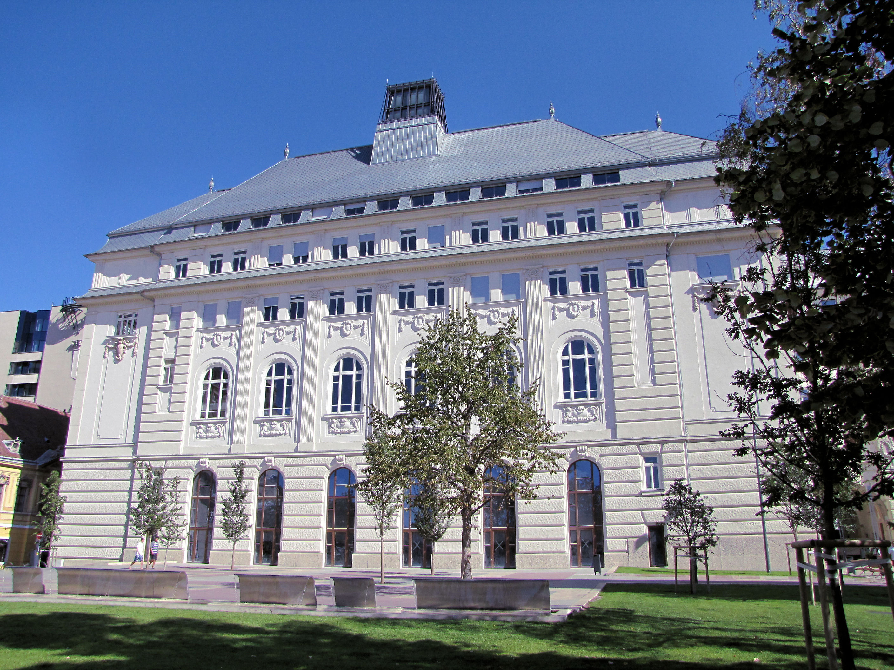
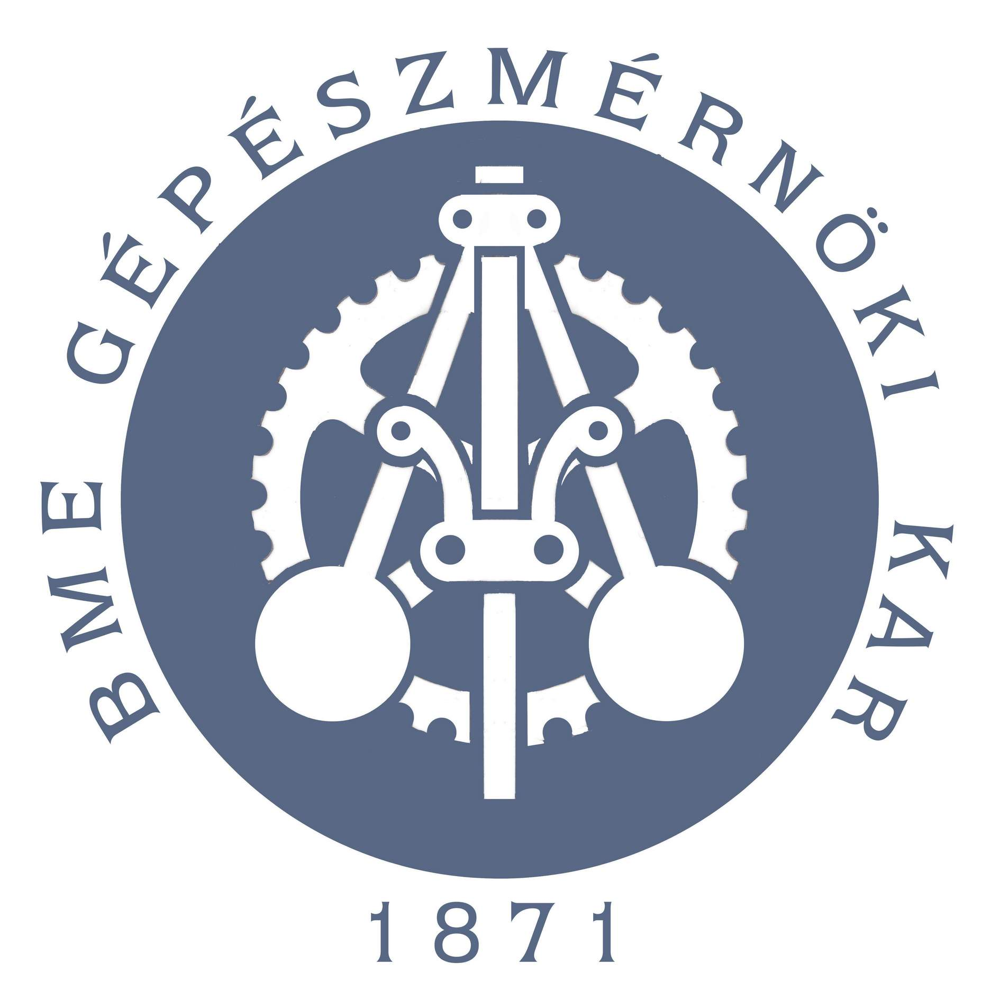

Tanulmányok

- Nyelvvizsgák:
- - B2 angol (EuroExam)
- -
- Diplomák:
- -
- -
- Szakdolgozatok/publikációk:
- -
- -
Az 1. osztályt a tordasi Sajnovics János általános iskolában kezdtem. Ebben az iskolában minden évben kitűnő bizonyítványt szereztem, ezért szüleim ragaszkodtak hozzá, hogy a 7. osztályt komolyabb iskolában folytossam. Szerencsére konkrét elképzeléseim voltak, így nem kellett sokat győzködniük. Már 10 éves koromban egy nyíltnapon eldöntöttem, hogy a Budapestre a Piarista Gimnáziumba felvételizek. A felvételi borzasztóan rosszul sikerült, mivel nagyon elizgultam,de szerencsére felvettek. Itt már nem csak 5-ös jegyeim voltak, de vettem az akadályokat teljes vállal. Érettségit is itt tettem. Ezek után a Budapesti Műszaki- és Gazdaságtudományi Egyetemre mentem energetikai mérnök szakra.
